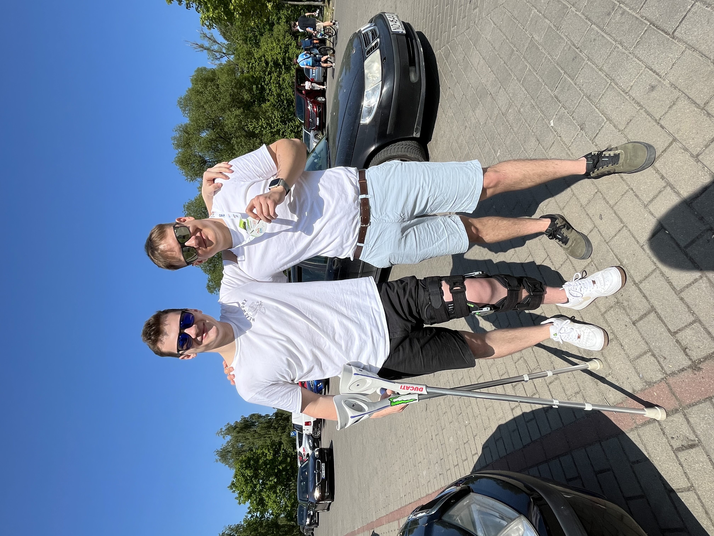

Niestety – ekipa wykrzaczyła się przed startem... Tym razem nie auto, a organizm powiedział “check engine”. Dziękujemy za wsparcie, kibicujemy wszystkim załogom i widzimy się na trasie za rok!
Dzięki waszej pomocy w 2024 roku udało nam się uzbierać 4778 zł!
Ogólna zbiórka w zeszłorocznej edycji osiągnęła kwotę ponad 2 520 837 zł!
Złombol to rajd charytatywny, gdzie ludzie biorą stare, często zardzewiałe samochody, starają się doprowadzić do stanu używalności i wyruszają do jednego z krajów w UE. Samochody muszą spełniać jedno kryterium, mianowicie muszą być to pojazdy komunistycznej koncepcji lub produkcji. Co roku jest to inne miejsce docelowe, ale co roku cel jest ten sam – zebrać pieniądze dla dzieci z domów dziecka. To świetny pomysł na dobrą zabawę i jednocześnie okazja, żeby wspólnie zrobić coś dobrego.